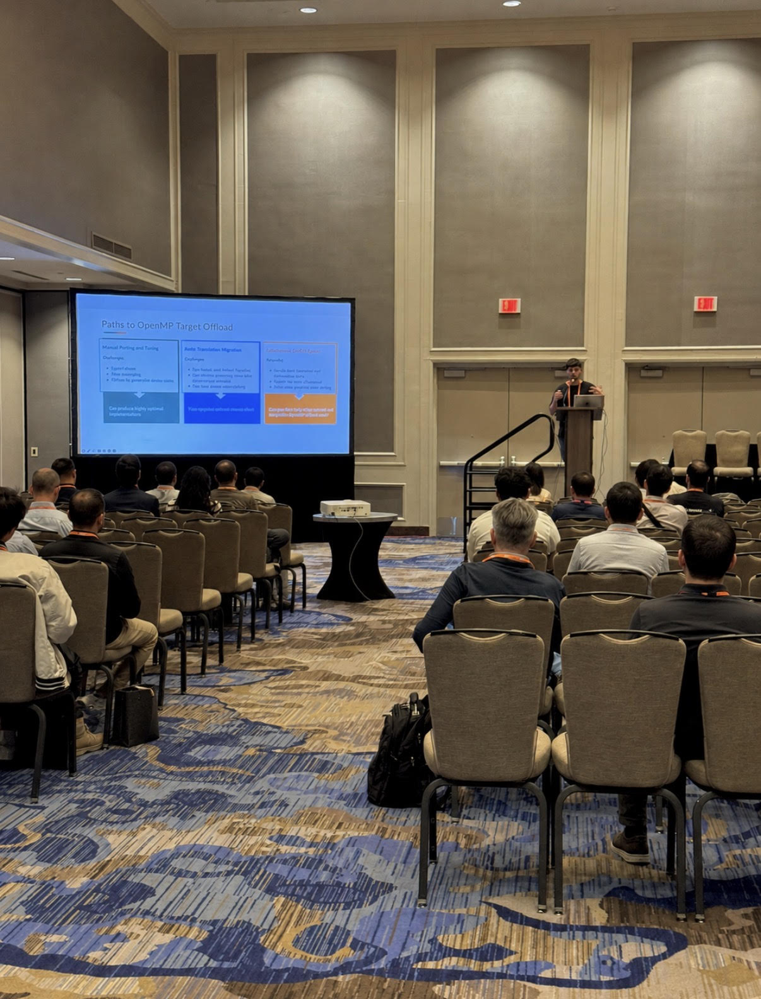
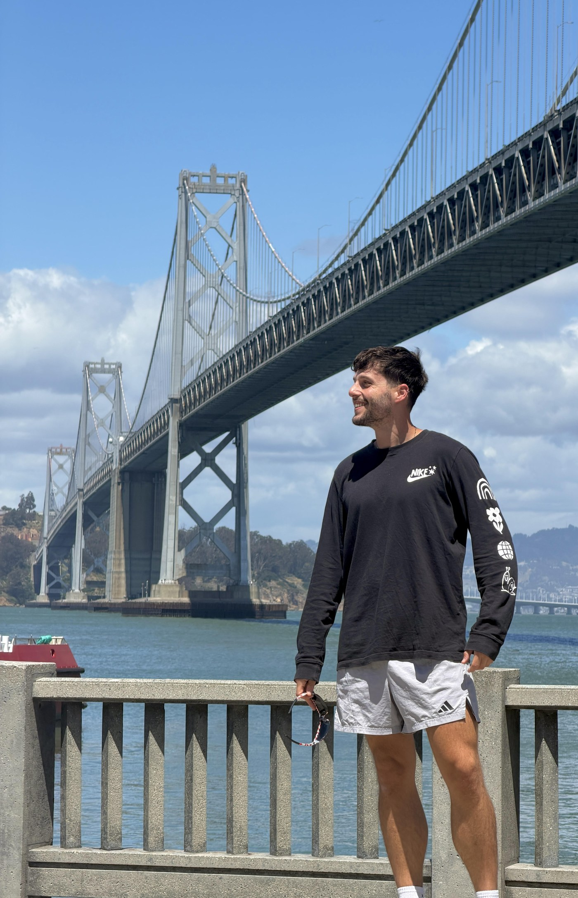
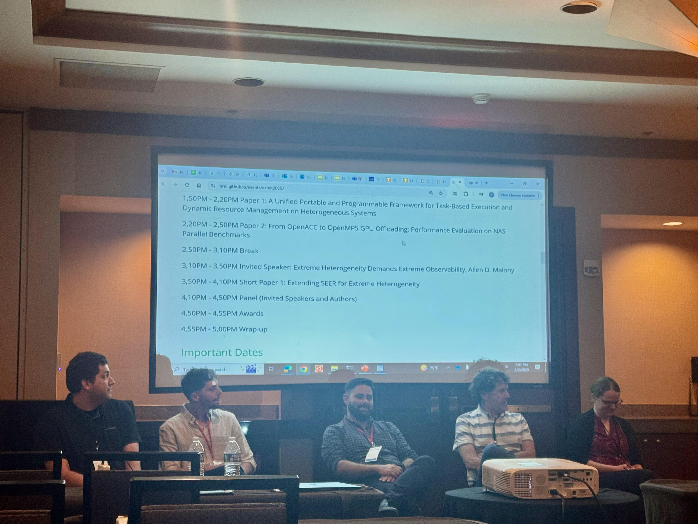
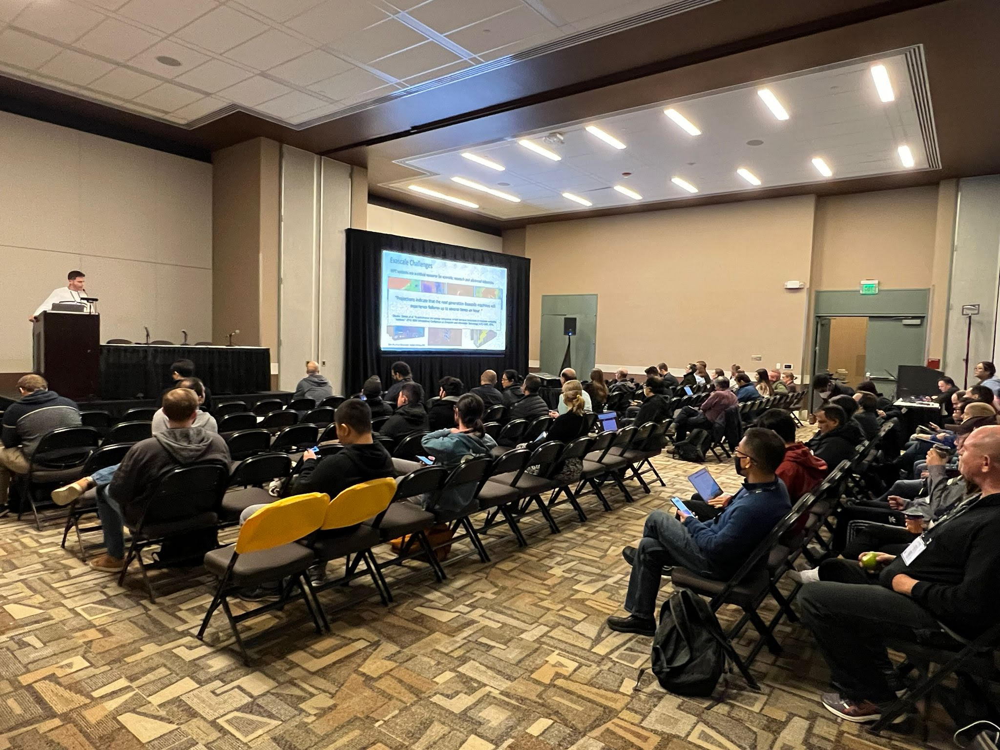
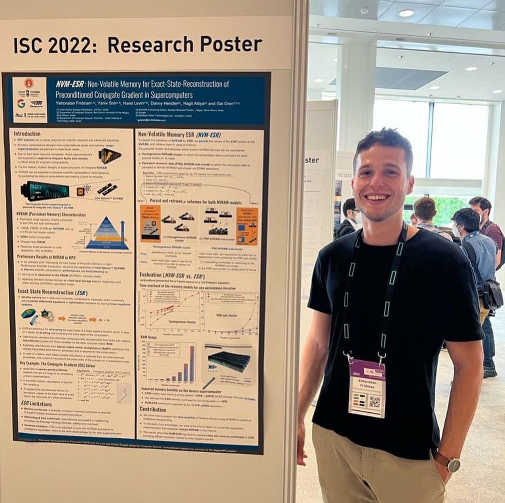
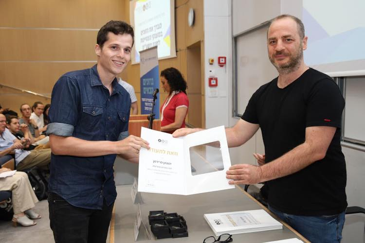

I am a Researcher and Algorithms Developer at the Israel Atomic Energy Commission since 2019 and a Ph.D. student in the Computer Science Department at Ben-Gurion University since 2023.
My Ph.D. research focuses on recoverable algorithms for high-performance computing systems, especially with emerging memory technologies such as persistent memory (PMEM) and CXL. More broadly, I am interested in parallel and distributed computing, algorithms, artificial intelligence, computer vision, and image processing. For the fun of it, I also enjoy combinatorics and probability.
Spinning is my favorite exercise.
Education
-
Ph.D. Student in Computer Science
Fields: Distributed Computing, Recoverable Data Structures, Persistent Memory, Emerging Technologies
Supervisors: Prof. Danny Hendler, Prof. Hagit Attiya, Dr. Gal Oren
-
M.Sc. in Computer Science
Thesis: Recoverable Algorithms in HPC Systems Using NVRAM Technology
Supervisors: Prof. Danny Hendler, Prof. Hagit Attiya, Dr. Gal Oren
-
B.Sc. in Computer Science and Mathematics
Graduation with distinction
Publications
-
2026
R. Harel, R. Wagner, Y. Fridman, M. Rusanovsky, H. Levin, G. Oren. "SCALSALE: A Scalable MPI+X Benchmark for Lagrangian Hydrodynamics on Heterogeneous Systems", 27th IEEE International Workshop on Parallel and Distributed Scientific and Engineering Computing (PDSEC), held in conjunction with IEEE IPDPS, 2026.
-
2026
Y. Fridman, G. Oren. "Manual, Translated, or LLM-Generated? Comparing Paths to OpenMP Target Offload for LULESH", 31st International Workshop on High-level Parallel Programming Models and Supportive Environments (HIPS), held in conjunction with IEEE IPDPS, 2026.
-
2026
Y. Fridman. "A Combinatorial Generalization of a Random-Player Game", arXiv preprint arXiv:2606.18956, 2026.
-
2025
Y. Fridman, Y. Goren, G. Oren. "From OpenACC to OpenMP5 GPU Offloading: Performance Evaluation on NAS Parallel Benchmarks", Proceedings of the 2025 4th International Workshop on Extreme Heterogeneity Solutions, 2025.
-
2024
Y. Fridman, G. Tamir, U. Steinitz, G. Oren. "Distributed OpenMP Offloading of OpenMC on Intel GPU MAX Accelerators", arXiv preprint arXiv:2403.02735, 2024.
-
2024
Y. Fridman. "A Random-Player Game and Derangement Numbers", arXiv preprint arXiv:2402.10246, 2024.
-
2024
D. Goldberger, Y. Fridman, E. Gull, E. Eidelstein, G. Cohen. "Dynamical Mean Field Theory of the Bilayer Hubbard Model with Inchworm Monte Carlo", Physical Review B 109.8 (2024): 085133.
-
2023
Y. Fridman, S. Mutalik Desai, N. Singh, T. Willhalm, G. Oren. "CXL Memory as Persistent Memory for Disaggregated HPC: A Practical Approach", Proceedings of the SC'23 Workshops of The International Conference on High Performance Computing, Networking, Storage, and Analysis, 2023.
-
2023
Y. Fridman, G. Tamir, G. Oren. "Portability and Scalability of OpenMP Offloading on State-of-the-Art Accelerators", International Conference on High Performance Computing. Cham: Springer Nature Switzerland, 2023.
-
2022
Y. Fridman, Y. Snir, H. Levin, D. Hendler, H. Attiya, G. Oren. "Recovery of Distributed Iterative Solvers for Linear Systems Using Non-Volatile RAM", 2022 IEEE/ACM 12th Workshop on Fault Tolerance for HPC at eXtreme Scale (FTXS). IEEE, 2022.
-
2022
Y. Fridman, Y. Snir, H. Levin, D. Hendler, H. Attiya, G. Oren. "NVM-ESR: Using Non-Volatile Memory in Exact State Reconstruction of Preconditioned Conjugate Gradient", 2022.
-
2022
Y. Fridman, R. Harel, G. Oren. "The Case for Non-Volatile RAM in Cloud HPCaaS", arXiv preprint arXiv:2208.02240, 2022.
-
2021
Y. Fridman, M. Rusanovsky, G. Oren. "ChangeChip: A Reference-Based Unsupervised Change Detection for PCB Defect Detection", 2021 IEEE Physical Assurance and Inspection of Electronics (PAINE). IEEE, 2021.
-
2021
Y. Fridman, Y. Snir, M. Rusanovsky, K. Zvi, H. Levin, D. Hendler, H. Attiya, G. Oren. "Assessing the Use Cases of Persistent Memory in High-Performance Scientific Computing", 2021 IEEE/ACM 11th Workshop on Fault Tolerance for HPC at eXtreme Scale (FTXS). IEEE, 2021.
-
2020
R. Harel, M. Rusanovsky, Y. Fridman, A. Shimony, G. Oren. "Complete Deep Computer-Vision Methodology for Investigating Hydrodynamic Instabilities", International Conference on High Performance Computing. Cham: Springer International Publishing, 2020.
Awards
- 2023 Pazy Award for excellent research funded by the Pazy Foundation.
- 2022 IEEE TCHPC Travel Award for attending the SC Conference, Dallas, Texas.
- 2019 Grant of excellence for academic achievements on behalf of the School of Computer Science, Tel Aviv University.
- 2019 "Club-100" grant of excellence for academic achievements, IDF.
Gallery





